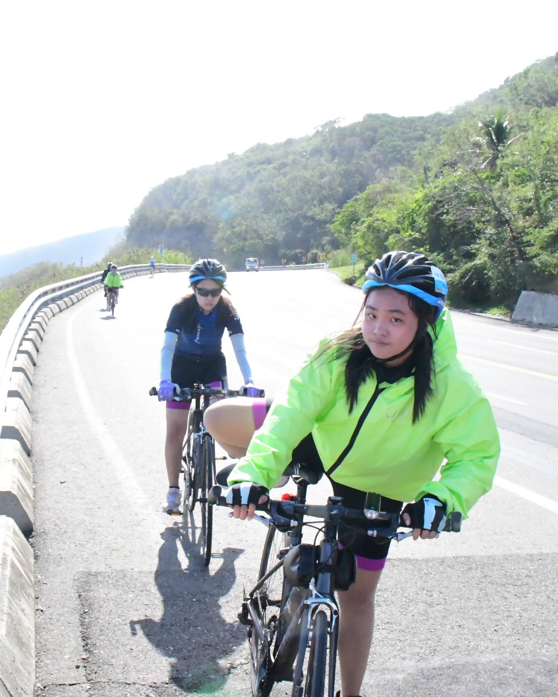

廖盈榕 Ying-Jung, Liao
目前就讀於國立陽明交通大學運輸與物流管理學系，專注於交通與物流領域的應用與研究。我相信「資料會說話」，喜歡將資料轉化為資訊，並將技術應用於解決實際問題，曾參與國道智慧交通管理創意競賽，並獲得優選。
課業之餘，參與系學會以及方程式賽車隊累積專案管理經驗，於系學會擔任副會長，負責協調各部門運作；同時在方程式賽車隊擔任電力系統組專案經理與財務職位，負責團隊管理與資料整合，並成功爭取企業贊助，實現團隊目標。
未來將持續深化在交通運輸、物流與資料科學領域的專業知識，並不斷拓展技能，期望能在未來發揮更大的影響力。